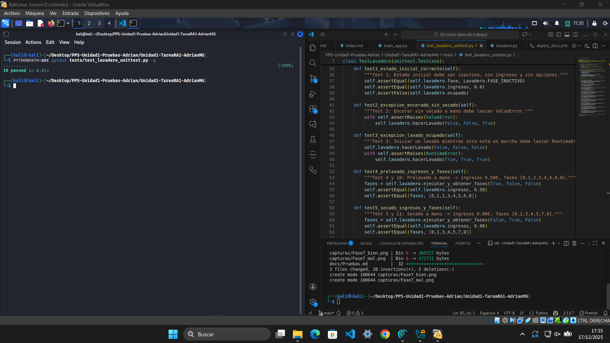

Informe de Pruebas Unitarias – Lavadero
1. Código de pruebas
def test1_estado_inicial_correcto(self):
"""Test 1: Estado inicial debe ser inactivo, sin ingresos y sin opciones."""
self.assertEqual(self.lavadero.fase, Lavadero.FASE_INACTIVO)
self.assertEqual(self.lavadero.ingresos, 0.0)
self.assertFalse(self.lavadero.ocupado)
def test2_excepcion_encerado_sin_secado(self):
"""Test 2: Encerar sin secado a mano debe lanzar ValueError."""
with self.assertRaises(ValueError):
self.lavadero.hacerLavado(False, False, True)
def test3_excepcion_lavado_ocupado(self):
"""Test 3: Iniciar un lavado mientras otro está en marcha debe lanzar RuntimeError."""
self.lavadero.hacerLavado(False, False, False)
with self.assertRaises(RuntimeError):
self.lavadero.hacerLavado(True, True, True)
def test4_prelavado_ingresos_y_fases(self):
"""Test 4 y 10: Prelavado a mano -> ingresos 6.50€, fases [0,1,2,3,4,5,6,0]."""
fases = self.lavadero.ejecutar_y_obtener_fases(True, False, False)
self.assertEqual(self.lavadero.ingresos, 6.50)
self.assertEqual(fases, [0,1,2,3,4,5,6,0])
def test5_secado_ingresos_y_fases(self):
"""Test 5 y 11: Secado a mano -> ingresos 6.00€, fases [0,1,3,4,5,7,0]."""
fases = self.lavadero.ejecutar_y_obtener_fases(False, True, False)
self.assertEqual(self.lavadero.ingresos, 6.00)
self.assertEqual(fases, [0,1,3,4,5,7,0])
def test6_secado_y_encerado(self):
"""Test 6 y 12: Secado + encerado -> ingresos 7.20€, fases [0,1,3,4,5,7,8,0]."""
fases = self.lavadero.ejecutar_y_obtener_fases(False, True, True)
self.assertEqual(self.lavadero.ingresos, 7.20)
self.assertEqual(fases, [0,1,3,4,5,7,8,0])
def test7_prelavado_y_secado(self):
"""Test 7 y 13: Prelavado + secado -> ingresos 7.50€, fases [0,1,2,3,4,5,7,0]."""
fases = self.lavadero.ejecutar_y_obtener_fases(True, True, False)
self.assertEqual(self.lavadero.ingresos, 7.50)
self.assertEqual(fases, [0,1,2,3,4,5,7,0])
def test8_prelavado_secado_encerado(self):
"""Test 8 y 14: Prelavado + secado + encerado -> ingresos 8.70€, fases [0,1,2,3,4,5,7,8,0]."""
fases = self.lavadero.ejecutar_y_obtener_fases(True, True, True)
self.assertEqual(self.lavadero.ingresos, 8.70)
self.assertEqual(fases, [0,1,2,3,4,5,7,8,0])
def test9_sin_extras(self):
"""Test 9: Lavado rápido sin extras -> ingresos 5.00€, fases [0,1,3,4,5,6,0]."""
fases = self.lavadero.ejecutar_y_obtener_fases(False, False, False)
self.assertEqual(self.lavadero.ingresos, 5.00)
self.assertEqual(fases, [0,1,3,4,5,6,0])
2. Ejecución inicial (código erróneo)

Resumen
| Test | Resultado esperado | Resultado obtenido |
|---|---|---|
| Test 1 | Estado inicial correcto | OK |
| Test 2 | ValueError al encerar sin secado | OK |
| Test 3 | RuntimeError al iniciar lavado ocupado | OK |
| Test 4–9 | Secuencias de fases e ingresos correctos | ERROR (AttributeError) |
3. Corrección del método ejecutar_y_obtener_fases
Método con código erróneo

En la ejecución inicial, varios tests daban ERROR debido a un fallo en la implementación del método ejecutar_y_obtener_fases.
El error concreto era:
AttributeError: 'Lavadero' object has no attribute 'lavadero'
Esto ocurría porque dentro del método se llamaba a self.lavadero.hacerLavado(...), pero la clase Lavadero no tiene ningún atributo llamado lavadero.
🔧 Arreglo realizado
- Se reemplazó la llamada incorrecta
self.lavadero.hacerLavado(...)porself.hacerLavado(...). - Se ajustó también el acceso a las propiedades (
self.fase,self.ocupado) para que usen directamente la instancia actual.

📌 Resultado tras el cambio
- Los tests ya no lanzan ERROR por
AttributeError. - Ahora los tests se ejecutan y muestran FAIL en los casos donde la lógica de precios y fases aún no coincide con lo esperado.
- Esto permite avanzar en la depuración: primero corregimos la ejecución del método, y después ajustaremos la lógica de negocio (precios y fases).
4. Corrección del método _cobrar
Bloque de código erróneo

En la ejecución tras corregir ejecutar_y_obtener_fases, varios tests pasaron de ERROR a FAIL.
El fallo concreto estaba en los ingresos calculados:
- El test de secado a mano (
test5_secado_ingresos_y_fases) esperaba 6.00 €, pero el resultado era 6.20 €. - El test de secado + encerado (
test6_secado_y_encerado) esperaba 7.20 €, pero el resultado era 7.00 €. - Otros tests también mostraban diferencias en los ingresos acumulados.
Esto ocurría porque en el método _cobrar los valores de los extras estaban mal asignados:
- Secado a mano sumaba 1.20 € en lugar de 1.00 €.
- Encerado sumaba 1.00 € en lugar de 1.20 €.
🔧 Arreglo realizado
- Se corrigió el valor del secado a mano: ahora suma 1.00 €.
- Se corrigió el valor del encerado: ahora suma 1.20 €.
- Se mantuvo el precio base de 5.00 € y el prelavado a mano en 1.50 €.

📌 Resultado tras el cambio
- Los tests de ingresos (
test5,test6,test7,test8,test9) ahora muestran los valores correctos. - Los FAIL por diferencias de precio desaparecen.
- Los tests aún muestran FAIL en algunos casos de fases, lo que indica que el siguiente paso es corregir la lógica de transición en
avanzarFase.
5. Corrección de la transición en la fase de rodillos
Bloque de código erróneo

Tras corregir los ingresos en _cobrar, varios tests seguían dando FAIL.
El fallo concreto estaba en las secuencias de fases:
- El test de secado a mano (
test5_secado_ingresos_y_fases) esperaba terminar en la fase 7 (Secado a mano), pero el flujo terminaba en la fase 6 (Secado automático). - El test de lavado sin extras (
test9_sin_extras) esperaba terminar en la fase 6 (Secado automático), pero el flujo terminaba en la fase 7 (Secado a mano).
Esto ocurría porque la condición en el bloque de rodillos estaba invertida:
- Si secado_a_mano = True, el código enviaba a fase 6 (automático).
- Si secado_a_mano = False, el código enviaba a fase 7 (manual).
🔧 Arreglo realizado
- Se corrigió la condición en el bloque
elif self.__fase == self.FASE_RODILLOS: - Si secado_a_mano = True → pasar a FASE_SECADO_MANO (7).
- Si secado_a_mano = False → pasar a FASE_SECADO_AUTOMATICO (6).

📌 Resultado tras el cambio
- El test de secado a mano (
test5) ahora muestra la secuencia correcta:[0,1,3,4,5,7,0]. - El test sin extras (
test9) ahora muestra la secuencia correcta:[0,1,3,4,5,6,0]. - Los FAIL por rutas incorrectas desaparecen.
- Los tests con encerado aún fallan, lo que indica que el siguiente paso es corregir la transición desde la fase 7 hacia la fase 8 cuando se selecciona encerado.
6. Corrección de la transición desde la fase 7 (Secado a mano) hacia la fase 8 (Encerado)
Bloque de código erróneo

Tras corregir la transición en la fase de rodillos, varios tests seguían dando FAIL.
El fallo concreto estaba en los lavados que incluían encerado junto al secado a mano:
- El test de secado + encerado (
test6_secado_y_encerado) esperaba la secuencia[0,1,3,4,5,7,8,0], pero el flujo terminaba en[0,1,3,4,5,7,0]. - El test de prelavado + secado + encerado (
test8_prelavado_secado_encerado) esperaba[0,1,2,3,4,5,7,8,0], pero el flujo terminaba en[0,1,2,3,4,5,7,0].
Esto ocurría porque el bloque de transición en la fase 7 llamaba directamente a terminar(), sin comprobar si había que pasar por la fase 8 (encerado).
🔧 Arreglo realizado
- Se modificó el bloque
elif self.__fase == self.FASE_SECADO_MANO: - Si encerado = True → pasar a FASE_ENCERADO (8).
- Si encerado = False → llamar a
terminar().

📌 Resultado tras el cambio
- El test de secado + encerado (
test6) ahora muestra la secuencia correcta:[0,1,3,4,5,7,8,0]. - El test de prelavado + secado + encerado (
test8) ahora muestra la secuencia correcta:[0,1,2,3,4,5,7,8,0]. - Los FAIL por rutas incompletas desaparecen.
- Con esta corrección, todos los tests de ingresos y fases pasan a OK.
7. Conclusión final
Tras realizar todas las correcciones paso a paso —desde la ejecución del método, los precios en _cobrar, hasta la lógica de transición entre fases— se ha conseguido que todos los tests unitarios pasen correctamente.
Esto demuestra que el sistema de lavado cumple con los 14 requisitos funcionales definidos, y que el comportamiento del programa es el esperado en todos los casos.
📌 Resultado final
- Todos los tests pasan (
OK). - Ingresos calculados correctamente.
- Secuencias de fases completas y coherentes.
- Excepciones lanzadas correctamente en casos inválidos.

Este resultado valida que el código es funcional, reproducible y cumple con los criterios de calidad exigidos.
Además, el uso de pruebas unitarias permite detectar errores de forma automática y documentar claramente el proceso de corrección.